Add Calculations, Alerts and Update Dashboards
Monitor calculations allow you to process time series data or do other scheduled activities. Calculations could be to check how much the actual power consumption deviates from the prediction power consumption from the pump. If this deviation is too large it could indicate there is a anomaly that needs to be investigated. In this exercise you will:
- Add Calculations to add a new metric called
predicted_power_max_deviationusing a formulapower_prediction* 1.2 - Add Alerts to raise an alert when the actual
POWERis greater than maximum_predicted_power_deviation.
Add Calculations
To see and monitor the values of calculated metric in Monitor, you must add the metric, calculated metrics and alerts to
an asset dashboard. In this exercise you will add the new calculated metric named power_prediction_co_max_deviation to your
asset calculated metrics to calculate the maximum power prediction allowed.
Note
Remember to replace co with your initials in the name of your own asset type if you aren't in an instructor led lab.
Remember to replace co with the initials that you used for your power prediction calculated metric.
-
Click
Setupmenu. Search onpump_co. Clickpump_co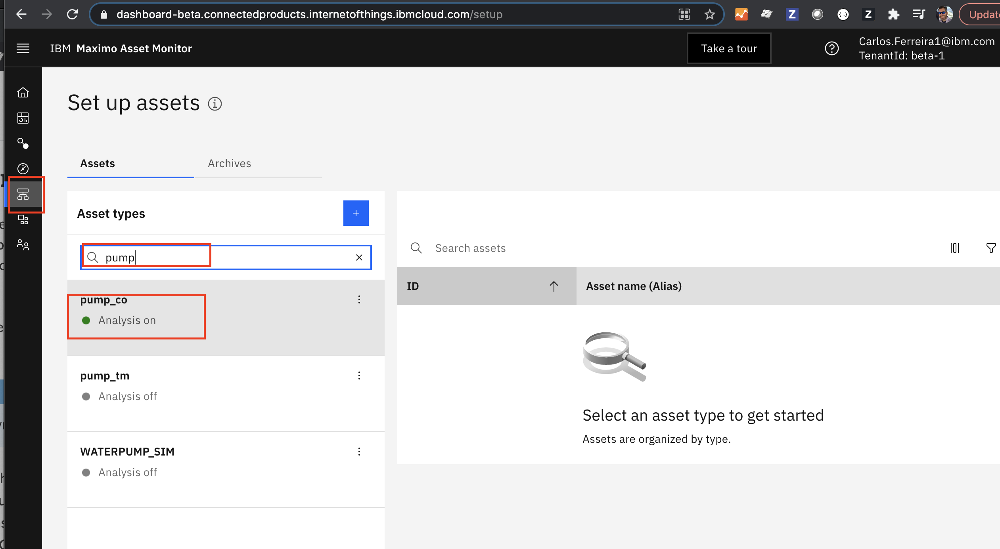 -
Click on
Manage Asset Typeto see the metrics that have already been added to your asset type for yourpump_co. 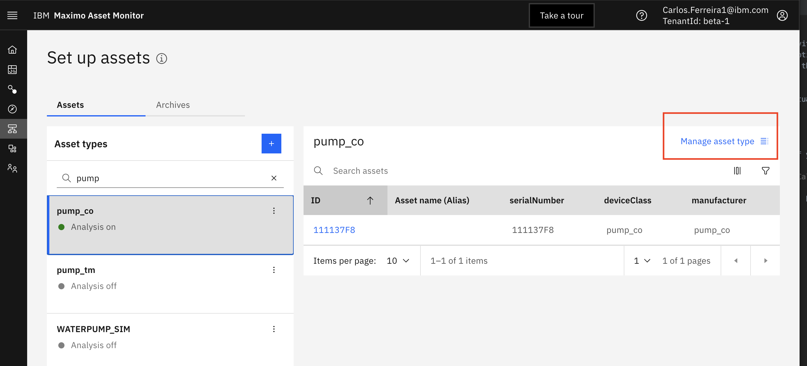 -
Click on the
Datatab, expand theMetricsandCalulated MetricThese are the raw metrics sent by the simulated pump time series data and the calculations used to operate on the data. Like making a prediction for power like you did in the last exercise to Deploy Model. 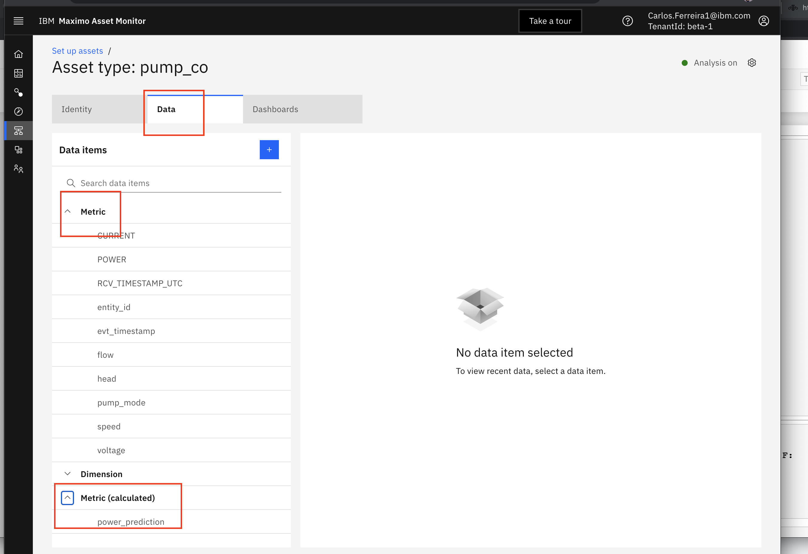 -
Add a calculation for what is the maximum acceptable power consumption. Click
+button in the Asset view, and then search for and select theNewColFromCalculationfunction. Click onselectbutton. 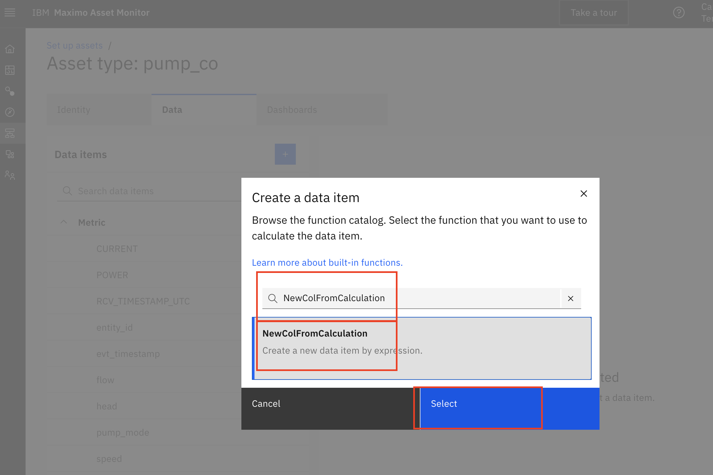 -
From
sourcesData Itemschoose thepower_predictionmetric as the input to our calculation. For the calculationexpressionenter:1.2*df['power_prediction']and click theNextbutton 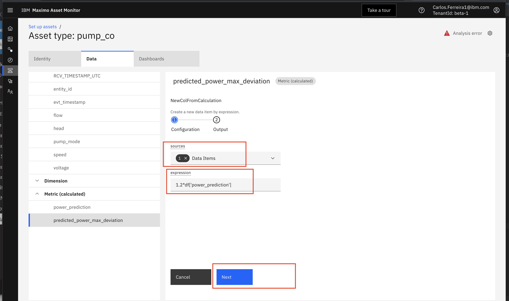 -
Set
Output metrictopredicted_power_co_max_deviation. SetOutput typetoNumber. Finally click theNextbutton. 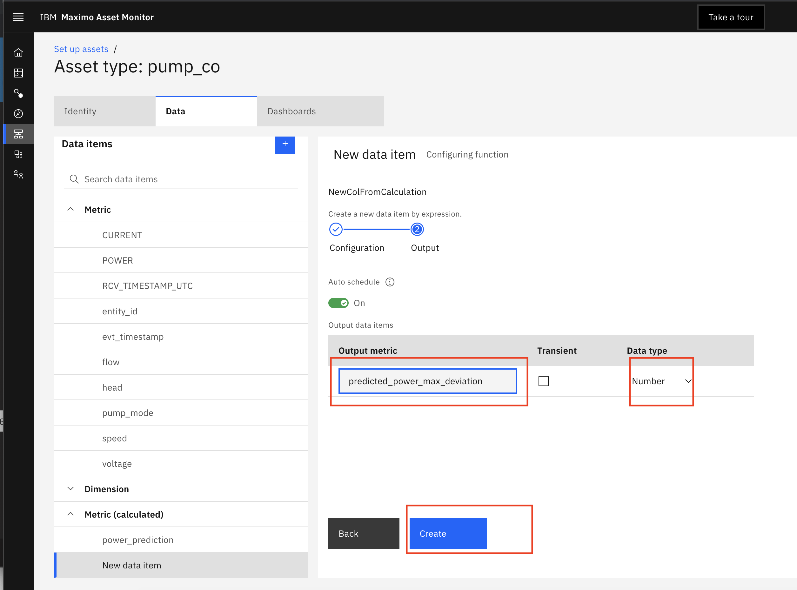
Add alerts
Note
Remember to replace co with your initials in the name of your own calculated metrics and alert names.
The "Alerts" function allows you to be notified when anomalies are detected. In this exercise you will add an Alerts
that check if the actual POWER is greater than the predicted_power_co_max_deviation.
-
Click
Setupmenu. Search onpump_coif you are in the instructor led class. Otherwise search forpump_Your_Initialsto find the asset type you created and click on it. Clickpump_Your_Initials
-
Click on
Manage Asset Typeto see the metrics that have already been added to your asset type for yourpump_Your_Initials
-
Click on the
Datatab, expand theMetricsandCalulated MetricThese are the raw metrics sent by the simulated pump time series data and the calculations used to operate on the data. Like making a prediction for power like you did in the last exercise to Deploy Model. -
Click
+button in the Asset view, and then search for and select theAlertExpressionfunction. 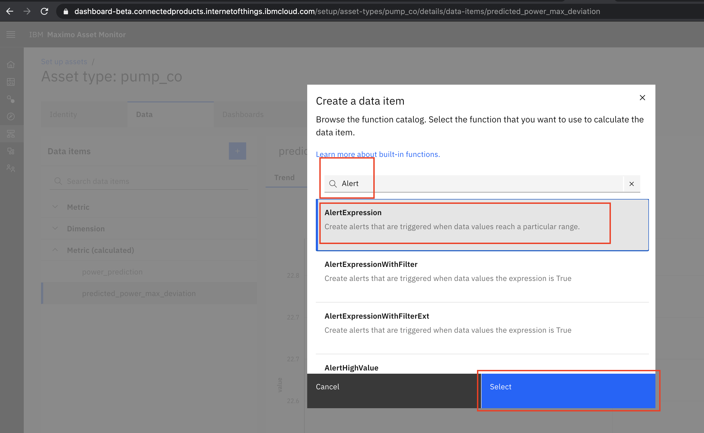 -
Then, enter a condition indicating when the Alert should be triggered. In this case, we should get an alert whenever
POWERis greaterpower_prediction_co_max_deviationdf['POWER']>df['power_prediction_co_max_deviation']ClickNext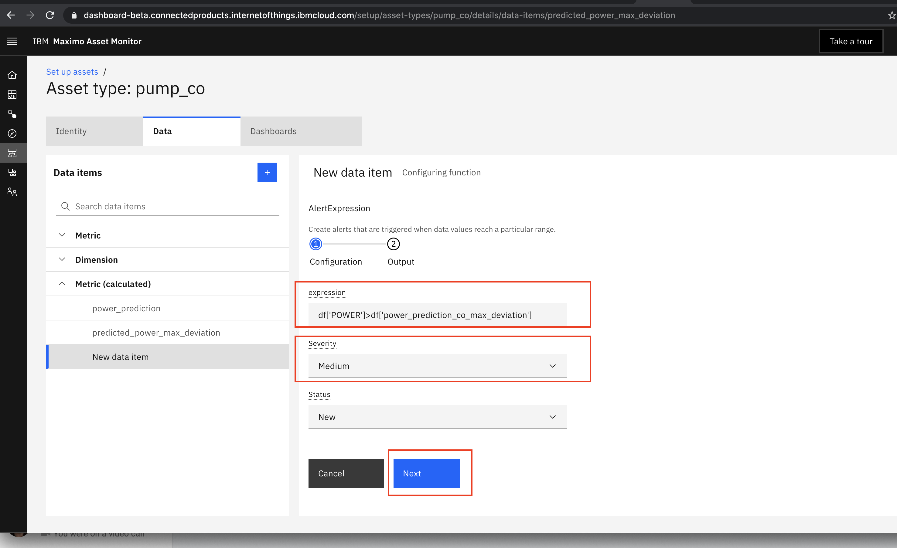 -
Set Output metric:
power_prediction_co_max_deviation_alert -
Set Output type:
Number -
Click
Createbutton. The calculation of alerts will be checked every 5 minutes by default. You can set a different schedule frequency as well for verifying calculations and alerts. 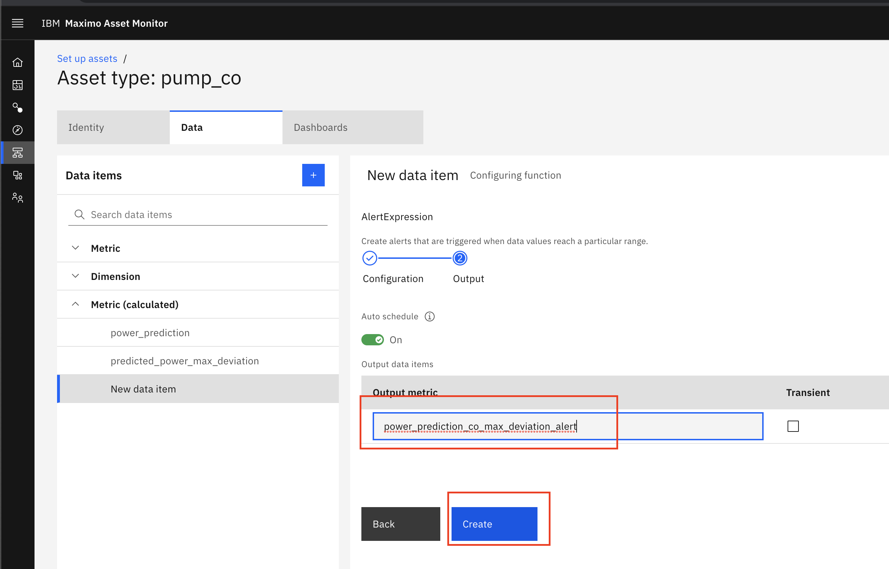
Update Dashboard Power Card
To see and monitor the values of calculated metric in Monitor, you must add the metric, calculated metrics and alerts to
an asset dashboard. In this exercise you will add the new calculated metric power_prediction_co_max_deviation to your
asset dashboard as a line series card.
Note
Remember to replace co with your initials in the name of your own asset type if you aren't in an instructor led lab.
Remember to replace co with the initials that you used for your power prediction calculated metrics and alerts.
-
Edit the Asset dashboard selecting your recently created calculated metric for
power_prediction_co. Click onMonitor, search onpump_co, click on111137F8, click onAsset Metrics Dashboardtab and click onSettingsgear icon. 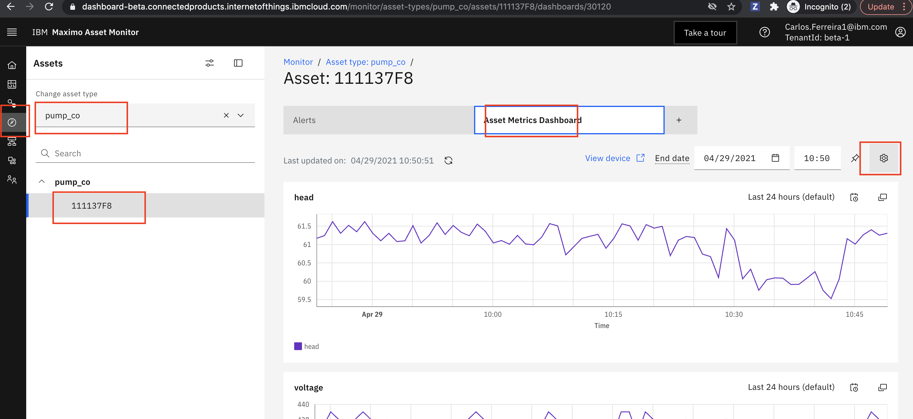 -
Click
Edit Dashboardand then clickContinuebutton in dialog. 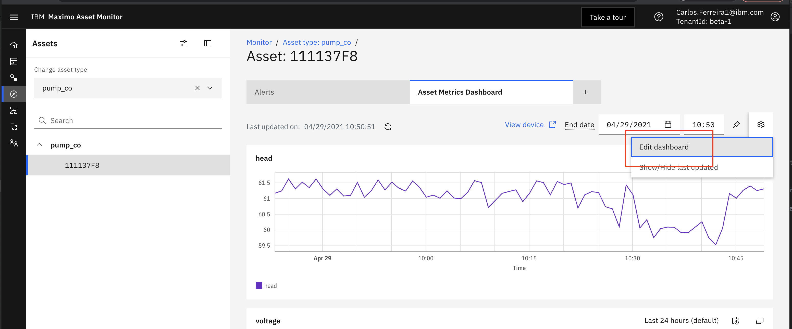 -
Click on the
POWERcard. In thecardwindow ,datasection click ondata item filterand selectpower_prediction_co. 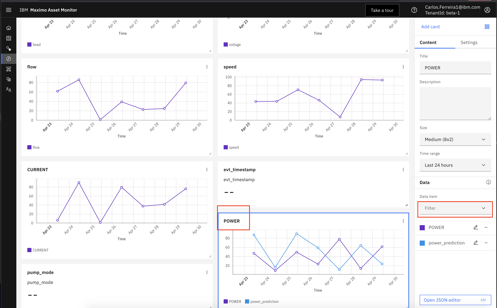 -
Click on the
Dashboardmenu tab. In thecardwindow ,datasection click ondata item filterand selectpower_prediction_co. 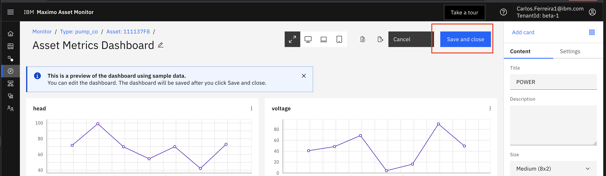 -
Click on the
POWERcard. In thecardwindow ,datasection click ondata item filterand selectpower_prediction_co. 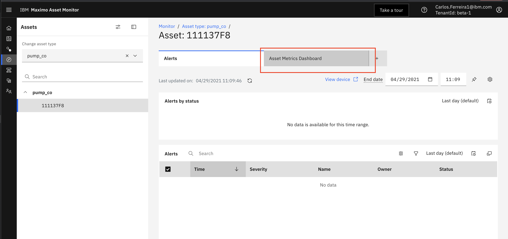 -
Click the
Save and closebutton to save your changes to the dashboard. All pumps will now get this same dashboard change. You can also create asset specific dashboards for each asset in theSetup Asset Typemenu.
Update Dashboard Power Card with Alert
To see a visual red dot on line series cards where alerts happen at specific time stamps you must edit the JSON of the dashboard directly.
-
Edit the Asset dashboard selecting your recently created calculated metric for
power_prediction_co. Click onMonitor, search onpump_co, click on111137F8, click onAsset Metrics Dashboardtab and click onSettingsgear icon. -
Click
Edit Dashboardand then clickContinuebutton in dialog. -
Click
Export Dashboardand save the json file locally. -
Update and save the Json with the following code using a Python Editor or Monitor's Json editor in the Dashboard Editor.

-
Import the updated Json file and click the
Save and closebutton to save your changes to the dashboard. All pumps will now get this same dashboard change. You can also create asset specific dashboards for each asset in theSetup Asset Typemenu. You should now see the Asset Metrics Dashboard with alerts similar to the one below in the Asset Dashboard.
View Dashboard
Note
Remember to replace co with your initials in the name of your own asset type if you aren't in an instructor led lab.
Remember to replace co with the initials that you used for your power prediction calculated metrics and alerts.
-
View the Asset dashboard. Click on
Monitormenu on the left, search onpump_co, click on111137F8, click onAsset Metrics Dashboardand scroll down to see the Power card. -
Expand the
POWERcard. Click on the double square icon. When the window opens click onPOWERand Click onpower_prediction_coto toggle the lines off and on. Notice the power values in the table below. You can also export the data to acsvfile by clicking on the funnel icon. 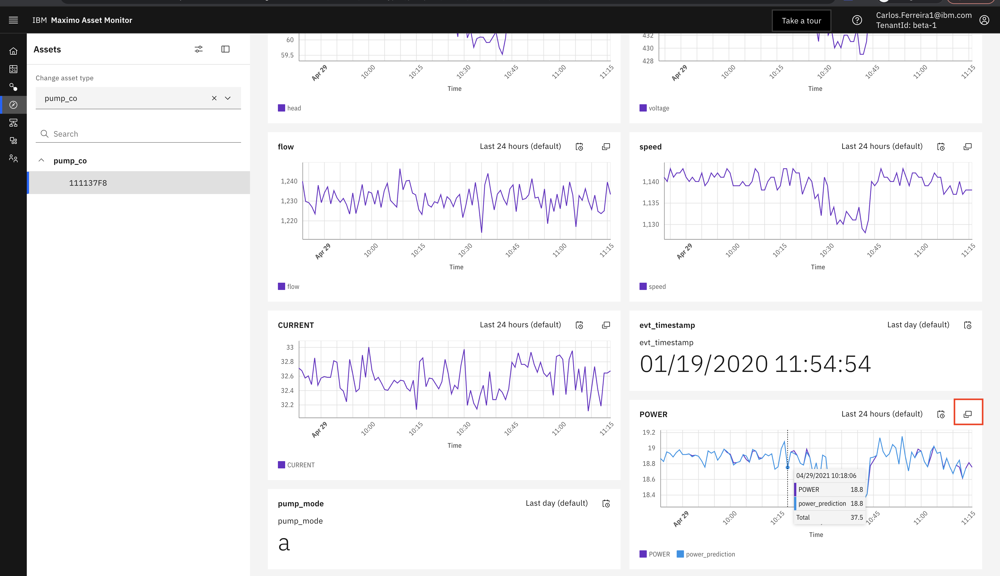
View Alerts
-
To see alerts for a specific asset, click on
Monitor, search onpump_coasset type, click on111137F8, click onAlertstab. 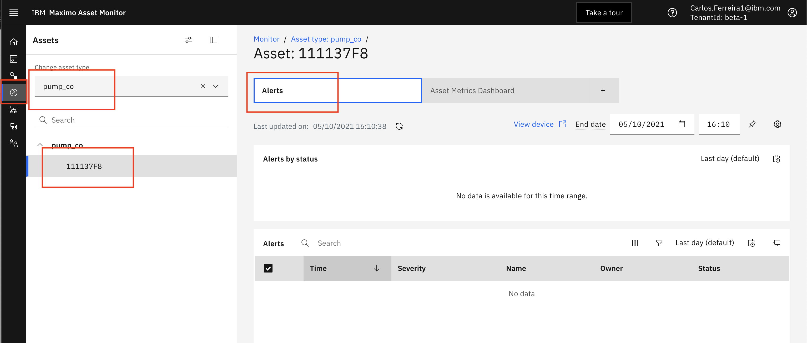 -
To see why there aren't any alerts modify the asset dashboard for
11111096. Addpower_prediction_co_max_deviationto your asset dashboard. Notice how the maximum value of the actual power never exceeds thepower_prediction_co_max_deviationAn alert should therefore never be triggered. Experiment setting new column calculated forpower_prediction_co_max_deviationto only be 1.05 higher to see if you can get some alerts showing.
Congratulations you have completed all the exercises in this lab and hopefully have a better understanding of how to create AI models and make the usable in Maximo Asset Monitor to monitor your assets.